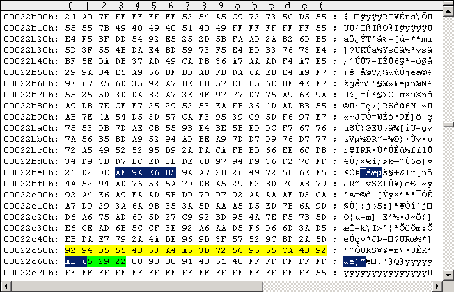
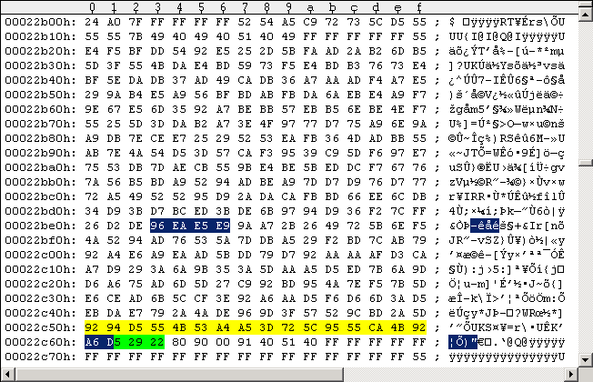
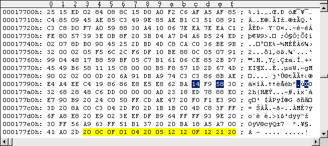

Main Index Routine Index Memory IndexRapidLok7 notes
RapidLok7 is very similar to RapidLok6, so I keep this article short. The patches are the same as for RapidLok6. I divided this into four parts: PART I: Differences between RapidLok 6 and 7 PART II: Patches for RapidLok7 PART III: Changing the TV standard: PAL <-> NTSC PART IV: Software titles with RapidLok7PART I: Differences between RapidLok 6 and 7
Here are the 1541 drive code differences between the RapidLok versions 6 and 7. I compared my original (unmodified) RapidLok6 Pirates G64 image (PAL) with all game titles listed below under "Software titles with RapidLok7". v6 v7 0208: 36 D7 035A: 86 A9 035B: C7 0A 035C: 86 85 037D: 86 BC (only in an alternate "Fast Break" NTSC version) 037E: 07 02 (only in an alternate "Fast Break" NTSC version) 064E: 29 25 064F: 0A C8 069D: 35 44 (not in "Power Drift") There are also differences in two $0415 routine addons (see below). The differences in the [$03xx] code area apply to the $0300 routine, the [$06xx] differences apply to the $0625 and $0698 routines. The $037D/$037E differences in an alternate "Fast Break" NTSC version are not covered here, because the authenticity of the disk is not yet confirmed. Note: The tool "RapidLok Scanner" from "Kracker Jax" does not know RapidLok7 and recognizes it as RapidLok6. You have to check for the above differences yourself to find out what exact RapidLok version you have on a disk. $0206 routine differences The $0206 routine is the remainder of the "M-W" memory command, cached in the 1541 [$0200-$0229] "Buffer for command string", that copied $15 data bytes to [$B5-$C9] ([$B5-$C5] are set to zero at $0313, but [$C6-$C9] are kept as parameters. See following code snippet (differences are marked red/green): --- $0206 routine code snippet -------------------------------------------------------------------------- Jump from $07FD: 0206: 58 CLI ; enable Interrupts for executing Job #4 (read Sector 3 to [$07xx]) RL7: 0207: 49 D7 EOR #$D7 ; XOR with parity of last read data buffer (Sector 15), should be $D4 RL6: 0207: 49 36 EOR #$36 ; XOR with parity of last read data buffer (Sector 15), should be $35 0209: 85 06 STA $06 ; [$06]:=$03, so [$05/$06] points to $0300 Jump from $0213: 020B: B1 05 LDA ($05),Y 020D: 59 17 04 EOR $0417,Y 0210: 91 05 STA ($05),Y ; decryption, [$0300-$0380]:= [$0300-$0380] xor [$0417-$0497] 0212: 88 DEY 0213: 10 F6 BPL $020B 0215: 6C 05 00 JMP ($0005) ; jump to $0300 (see above $0209 statement) --------------------------------------------------------------------------------------------------------- This means Track 18 Sectors 18 (startup) and 15 (encrypted $03xx buffer) have a different sector parity than the RapidLok6 ones. The $0206 startup routine decrypts the code area [$0300-$0380] against [$0417-$0497]. In particular [$035A] is xor'ed against [$0471], [$035B] against [$0472], and [$035C] against [$0472]. $0300 routine differences The changes here in the $0300 routine correspond to the changes in the $0625 routine below. The values of [$C7] and [$C9] are irrelevant. The differences in the following $0300 routine snippet are marked red/green): --- $0300 routine code snippet ----------------- RL6: 035A: 86 C7 STX $C7 ; [$C7]:=$FF RL6: 035C: 86 C8 STX $C8 ; [$C8]:=$FF RL7: 035A: A9 0A LDA #$0A RL7: 035C: 85 C8 STA $C8 035E: 86 C9 STX $C9 ; [$C9]:=$FF ------------------------------------------------ $0625 routine differences The $0650-STA sends a signal to the C64 client, it's the same signal for RapidLok 6 and 7 versions. But the $29-AND opcode takes 2 cpu cycles, the $25-AND 3 cpu cycles. This corresponds to the difference in the timing of the $0200 file transfer routine of the C64 client (see paragraph on changing the TV standard below). --- $0625 routine code snippet ---------------------------------------------------- 064A: 8D 00 18 STA $1800 064D: 0A ASL A RL6: 064E: 29 0A AND #$0A RL7: 064E: 25 C8 AND $C8 ; [$C8]=$0A 0650: 8D 00 18 STA $1800 0653: 68 PLA 0654: 8D 00 18 STA $1800 0657: 0A ASL A 0658: 29 0A AND #$0A 065A: 8D 00 18 STA $1800 065D: A9 0A LDA #$0A 065F: C6 B5 DEC $B5 ; decrease lo-number of bytes to be transferred 0661: 8D 00 18 STA $1800 0664: D0 04 BNE $066A ----------------------------------------------------------------------------------- $0698 routine differences This routine checks if the drive reads a Sync signal within a special time period (~Y*256 countdown). The carry flag is set if no Sync occurred. RapidLok7 is given a little bit more time to find a Sync mark. Note: As an odd address $069D is not affected by the codesegment checksum, but the sector parity is different. --- $0698 routine code snippet -------------------------------------------------------------------------------- Purpose: Wait for Sync mark, CF=0 if Sync found, Y:=0 (~set [$15]). 0698: 69 12 ADC #$12 ; A=$75 if data sector header was found 069A: 85 15 STA $15 ; set default offset to start of file data in [$0400] buffer: $75+$12+1=$88 JSR from $0736: RL6: 069C: A0 35 LDY #$35 RL7: 069C: A0 44 LDY #$44 Jump from $06A5, $06A8: 069E: AD 00 1C LDA $1C00 ; bit 7 of [$1C00] tells if SYNC is found 06A1: 10 07 BPL $06AA ; branch if SYNC found (bit 7 = 0) --------------------------------------------------------------------------------------------------------------- $0415 routine addon differences There are a few differences in $0415 routine addons listed below. First is $0499-ADC: the length of the $7B extra sectors must be closer to the corresponding Track Key values. Instead of checking [$1D]=[$0150]>=0 (byte-ready count on Track 36 at highest bit rate), the Track 22/25 Keys are required to be >=$21. This will prevent setting all Track Keys to zero value. As there are differences in the code between RapidLok 6 and 7, the codesegment checksum is different in the second code addon ($0497-SBC). If RapidLok7 detects an error in the "codesegment checksum code addon", the head read command at $045F, the $6B data sector ID at $0432 and the $06A8 command ($0698 routine won't wait for a sync again) are killed; if everything is ok, RapidLok 6 and 7 both return with A=$21, CF=0. --- $0415 routine addon snippet ------------------------------------------------------------------------------------ /////////////////////////// 047D: A6 3E LDX $3E ; dummy command (#$3E = parity of current data sector) 047F: A2 01 LDX #$01 ; current sector ID (varies of course) 0481: E4 23 CPX $23 ; correct sector found if [$23]=ID 0483: D0 90 BNE $0415 ; branch if not correct sector found 0485: E6 23 INC $23 ; set ID of next sector 0487: AA TAX 0488: 20 34 07 JSR $0734 ; measure length of next following Sync mark (in X); Y:=0 048B: E0 60 CPX #$60 048D: B0 14 BCS $04A3 ; all ok if X = Sync length < $60, so don't branch here! 048F: C8 INY ; start following data byte count with Y=1 0490: 20 26 07 JSR $0726 ; counts the $7Bs (returned in A) until next Sync. CF:=1. 0493: E5 0E SBC $0E ; subtract Key for current Track 0495: 90 02 BCC $0499 ; branch if A<[$0E]+1 (result negative) 0497: 49 FF EOR #$FF ; it's A>=[$0E] (result positive), CF=1 -> A:= -A Jump from $0495: RL6: 0499: 69 04 ADC #$04 RL7: 0499: 69 03 ADC #$03 049B: 30 06 BMI $04A3 ; all ok if: [$0E]-4 <= #7Bs <= [$0E]+4, so don't branch here! 049D: A5 1D LDA $1D ; [$1D] = [$0150] = byte-ready count on Track 36 (at highest bit rate), 049F: C9 20 CMP #$20 ; all ok if [$1D]<$20. 04A1: 90 03 BCC $04A6 ; -> this BCC must branch! -> RTS with CF=0 Jump from $048D, $049B: 04A3: 0E 40 04 ASL $0440 ; Kills the head read command at $043E. Avoid this!!! Jump from $04A1: 04A6: A9 21 LDA #$21 ; file data starts at $0400+$88+$21=$04A9 (usually [$15]=$88), except 1st sector 04A8: 60 RTS /////////////////////////// 047D: A6 9F LDX $9F ; dummy command (#$9F = parity of current data sector) 047F: A0 02 LDY #$02 ; current sector ID (varies of course) 0481: C4 23 CPY $23 ; correct sector found if [$23]=ID 0483: D0 90 BNE $0415 ; branch if not correct sector found 0485: E6 23 INC $23 ; set ID of next sector 0487: A0 7C LDY #$7C Jump from $048E, $0495: 0489: 79 00 04 ADC $0400,Y ; Codesegment-Checksum! 048C: 88 DEY ; adds every second byte in range 048D: 88 DEY ; [$0402-$047C,$0500-$07FE] (odd addresses skipped) 048E: D0 F9 BNE $0489 ; ; 0490: EE 8B 04 INC $048B ; increases $0489-buffer-address: $0400, $0500, ... , ($0800) 0493: C6 31 DEC $31 ; hi address for file transfer in $0625 routine 0495: 10 F2 BPL $0489 ; RL6: 0497: E9 E0 SBC #$E0 ; Checksum must be #$E0+1 RL6: 0499: D0 04 BNE $049F ; so branch is not taken! RL7: 0497: E9 DC SBC #$DC ; Checksum must be #$DC+1 RL7: 0499: D0 07 BNE $04A2 ; so branch is not taken! RL6: 049B: A5 1D LDA $1D ; [$1D] = [$0150] = byte-ready count on Track 36 (at highest bit rate), RL6: 049D: 10 06 BPL $04A5 ; must be >= 0, so branch is taken! RL7: 049B: A9 21 LDA #$21 ; A:=$21 RL7a:049D: CD 69 01 CMP $0169 ; [$0169] = Track 25 Key RL7b:049D: CD 66 01 CMP $0166 ; [$0166] = Track 22 Key RL7: 04A0: 90 06 BCC $04A8 ; branch if [$0169]>=$21 (ok!, RTS with A=$21, CF=0) Jump from $0499: RL6: 049F: 0E 40 04 ASL $0440 ; kills the head read command at $043E. Avoid this!!! RL6: 04A2: 8C 6A 01 STY $016A ; kills Track 23 Key RL7a:04A2: 8E 61 04 STX $0461 ; kills the head read command at $045F. Avoid this!!! RL7b:04A2: 8D A8 06 STA $06A8 ; kills the $06A8 command, so $0698 routine does not find sync. Avoid this!!! RL7: 04A5: 8C 32 04 STY $0432 ; kills the $6B data sector ID Jump from $049D: RL6: 04A5: A9 21 LDA #$21 ; file data starts at $0400+$88+$21=$04A9 (usually [$15]=$88), except 1st sector RL6: 04A7: 18 CLC Jump from $04A0: 04A8: 60 RTS ; RTS with A=$21, CF=0 (CF=1 if error in RL7) /////////////////////////// --------------------------------------------------------------------------------------------------------------------PART II: Patches for RapidLok7
As RapidLok versions 5, 6 and 7 are similar, I combined the patches for the different versions. See RapidLok6 patches. Yes, the patches work for RapidLok versions 5, 6 and 7, even if there are differences in the code and the sector parity. You only have to make sure the marked bytes in the figures are exactly the same before you edit them.PART III: Changing the TV standard: PAL <-> NTSC
RapidLok disks come around with predefined TV standard, you can't run them on a C64 with a different TV standard. I show you here how you can simply switch between the TV standards if you have a "wrong" disk. But please don't edit your original disks - change the TV standard only on remastered disks or in your G64 images! There is no problem for WinVice - you can set the correct TV standard in WinVice (Options - Video standard)! Notice: A game may have further PAL/NTSC checks inside its game code or none at all, thus relying on the TV standard "enforced" by RapidLok. They may not work with the "wrong" hardware or may have some sort of screen flicker! We make only sure here that RapidLok works with the chosen TV standard. The difference between PAL and NTSC versions of RapidLok7 is the timing of the 2-bit fastloader in the $0200 transfer routine of the C64 client (1541 code is the same for PAL/NTSC), see following code snippet: --- $0200 file transfer routine snippet (C64 client) ------------- 0224 8E 00 DD STX $DD00 0227 8E 40 02 STX $0240 PAL: 022A 06 C3 ASL $C3 NTSC: 022A A1 AE LDA ($AE,X) 022C 8A TXA 022D 0D 00 DD ORA $DD00 0230 4A LSR A 0231 4A LSR A 0232 0D 00 DD ORA $DD00 0235 4A LSR A 0236 4A LSR A 0237 0D 00 DD ORA $DD00 023A 4A LSR A 023B 4A LSR A 023C 4D 00 DD EOR $DD00 023F 49 FF EOR #$FF 0241 91 AE STA ($AE),Y ------------------------------------------------------------------ The $0200 routine gets loaded and decrypted into C64-memory by the initial $02ED startup routine (see RapidLok6 article on changing the TV standard). The following two tables show which bytes are read and how they are decrypted in the PAL and NTSC versions: --- PAL DECRYPTION ----------------- 022A = |FF 79| xor |F9 BA| = |06 C3| ------------------------------------ --- NTSC DECRYPTION ---------------- 022A = |58 14| xor |F9 BA| = |A1 AE| ------------------------------------ Now load Track 18 Sector 18 into Maverick v5.04 GCR Editor and apply the modifications to get the changes in the GCR code. Don't forget the sector parity. Then apply the changes in the GCR code to the G64 images using UltraEdit. The following Figure #1 shows Track 18 Sector 18 of a RapidLok7 PAL disk and Figure #2 that of the NTSC version. Notice 1: The green marked bytes are GCR-encoded off-bytes at the end of every DOS sector - they may be different on your disk (no problem - they are unused): a standard DOS data sector consists of 1 byte block ID ($07), 256 data bytes and 1 byte checksum, making 258*5/4=322.5 encoded data bytes on disk after the Sync mark; adding the usual 2 off-bytes due to GCR alignment (usually zeros) make 260*5/4=325, hence (325-322.5)=2.5 green marked bytes. Remember the factor 5/4 comes from the GCR encoding on disk: 4 memory bytes are converted to 5 GCR bytes on disk (the "GCR alignment"). The following bytes before the next Sync mark are (random) off-bytes as well. Notice 2: The yellow marked bytes are known to be possibly different on RapidLok7 disks, they're some sort of unused off-bytes. There are up to 13 bytes different in D64 images: the yellow marked last 13 of the 256 data bytes in the sector (see Figures #3 and #4 below). This corresponds to (257-13)*5/4=305 "identical" data bytes in the associated G64 images, counted from the beginning of the sector (ok, the marked PAL/NTSC bytes in the middle are different); directly following in the G64 images are the yellow marked 13*5/4=16,25 different bytes (2 bits overlapping to marked checksum). The 2 overlapping bits from the 257 GCR encoded data bytes may lead to a different first byte in the blue marked sector checksum in Figures #1 and #2 below (the "A" at offset $22C60 there), which is no problem - simply apply the blue marked changes. Important: If your yellow marked bytes are different, you must use the ones in the figures! If you encounter more differences, don't apply this TV standard fix - or fix the sector parity yourself! Changing the TV standard:
The following Figure #1 shows a PAL G64 disk image and Figure #2 shows a NTSC G64 disk image. You have to change the blue marked bytes. If the yellow marked bytes are different in your own disk images, you must use the ones in the figures! The green marked bytes are unused.
Figure #1: Original Track 18 Sector 18 of RapidLok7 PAL disk, G64 image.
Figure #2: Track 18 Sector 18 of RapidLok7 NTSC disk, G64 image.The following Figures #3 and #4 show how the changes are applied to D64 images. You should not need this, but I show it here how this is done:
Figure #3: Original Track 18 Sector 18 of RapidLok7 PAL, D64 image.
Figure #4: Track 18 Sector 18 of RapidLok7 NTSC, D64 image.PART IV: Software titles with RapidLok7
The following games are known to be protected with RapidLok7. This list may not be complete. Keep in mind that even if a title is listed below this does not necessarily mean all versions of it are protected with RapidLok7: There may exist versions that may have a different RapidLok version, a non-RapidLok protection, or even no protection at all. Game Company TV type ------------------------------------------ Blue Angels Accolade PAL NTSC Fast Break Accolade PAL NTSC Power Boat USA Accolade PAL Power Drift Activision NTSC Rack'Em Accolade PAL NTSC Serve and Volley Accolade PAL NTSC Steel Thunder Accolade NTSC TKO Accolade PAL If you have other RapidLok7 protected titles, titles with different TV type than listed above or even listed titles without RapidLok protection and want to support me, then please send me the unmodified nib-dumps (with logfiles) of your original disk(s).